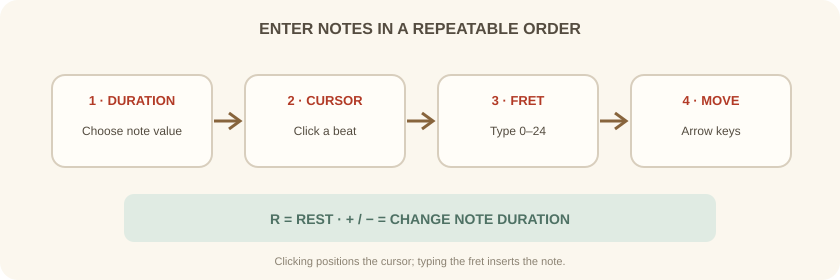
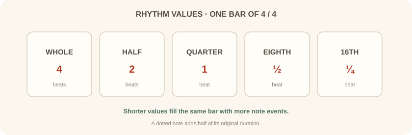

دورهٔ فرعی · Guitar Pro · جلسهٔ سوم از شش
در این جلسه نشانگر ویرایش را به کار میگیریم، ارزش زمانی نت را تعیین میکنیم و فرتها را طوری وارد میکنیم که ضرب میزان درست بماند.
بخش اول
ابتدا نوع نت را از پالت ویرایش انتخاب کن. سپس روی ضرب موردنظر کلیک کن تا نشانگر در همان جایگاه قرار بگیرد؛ کلیک بهتنهایی نت وارد نمیکند. در تبلچر شمارهٔ فرت را با صفحهکلید بنویس و برای حرکت در میزان از کلیدهای جهتدار استفاده کن.
اگر نت را روی حامل وارد میکنی، Guitar Pro آن را همزمان در تبلچر نشان میدهد. در تبلچر نیز فرتی که وارد میکنی به نت استاندارد تبدیل میشود؛ بنابراین کوک مسیر بر نتیجه اثر دارد.

بخش دوم
در میزان 4/4، نت گرد چهار ضرب، سفید دو ضرب و سیاه یک ضرب دارد. چنگ نیمضرب و دولاچنگ یکچهارم ضرب است. اگر مجموع ارزشها با میزاننما جور نباشد، میزان ناقص یا بیشازحد پر میشود.
برای تغییر ارزش نت از کلیدهای + و − یا پالت استفاده کن. کلید R سکوت وارد میکند. نقطه کنار نت، نیمی از ارزش زمانی آن را اضافه میکند.

بخش سوم
در کوک استاندارد، سیم اولِ آزاد صدای E4 میدهد. روی همان سیم، این توالی را وارد کن: 0–1–3–5–7–8–10–12؛ نتهای شنیدهشده E–F–G–A–B–C–D–E هستند.
همه را به شکل سیاه و در میزان 4/4 وارد کن؛ هر میزان چهار نت داشته باشد. سپس پخش کن و نمایش نت استاندارد را با اعداد تبلچر مقایسه کن.